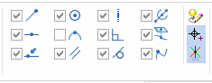
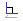
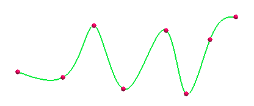

3D sketch relationships
As you create 3D sketch elements, 3D IntelliSketch recognizes the relationships checked in the 3D IntelliSketch group.

The End relationship recognizes the end point of an element. For example, you can draw a new line at the end point of another line or arc.

The Mid relationship recognizes the midpoint of an element, such as the midpoint of a line. For example, you can draw a new line at the midpoint of an existing line. You can also use midpoint to align two elements to one another. For example, you can add a vertical relationship between the midpoint of one line and the center of a circle.

The On Element relationship recognizes a point along an element. For example, you can draw a new line at a point on an existing element. You could then use a dimension to control the exact distance along the element you want.

The Center relationship recognizes the center point of an arc or circle. For example, you can draw a new circle at the center point of an existing circle or arc.

The Silhouette Point relationship recognizes the silhouette points on an arc, circle or ellipse. For example, when you draw a new line, you can touch the silhouette point on a circle. When you click, the new line is connected to the silhouette point on the existing circle.

The Parallel relationship recognizes whether a line is parallel to another line. For example, when you draw a new line, you can touch another line that you want the new line to be parallel to, then move the cursor to be approximately parallel to the first line. When the parallel indicator is displayed, click, and a parallel relationship is added to the new line.

The Horizontal or Vertical relationship recognizes whether a line is horizontal or vertical with respect to the X-axis of the profile plane. For example, you can position the cursor such that the vertical indicator is displayed when you are drawing a line. When you click, a vertical relationship is added to the line.

The Horizontal or Vertical relationship is recognized if you are drawing on a locked plane. If you are not drawing on a locked plane, the Parallel relationship is recognized instead. 3D IntelliSketch recognizes directions that line up with an axis on the orientation triad.
The Perpendicular

relationship recognizes whether a line is perpendicular to another line, or a whether line is perpendicular to an arc or circle. For example, when you draw a new line, you can position the cursor such that the perpendicular indicator is displayed. When you click, a perpendicular relationship is added to between the two lines.
The Tangent relationship recognizes whether an element is tangent to an adjacent element, such as a line, arc, or circle. For example, when you draw a new line that is connected to an existing arc, you can position the cursor such that the tangent indicator is displayed. When you click, a tangent relationship is added between the line and arc.

The Coaxial  relationship recognizes whether a line is coaxial to a circular element. Apply this
relationship to make an arc or circle in a 3D sketch coaxial with a linear segment
in the model. You can also make a line in a 3D sketch coaxial with a circular edge
or cylindrical face in the model.
relationship recognizes whether a line is coaxial to a circular element. Apply this
relationship to make an arc or circle in a 3D sketch coaxial with a linear segment
in the model. You can also make a line in a 3D sketch coaxial with a circular edge
or cylindrical face in the model.
The Project Keypoint relationship projects a located keypoint to the locked plane so you can draw on a locked plane while using other keypoints in the model.
The Edit Point relationship recognizes edit points on 3D curves. For more information, see the 3D Curve command.

How do I
Draw a 3D sketchCreate a 3D point using coordinates
Modify a 3D point
Create a 3D curve
Dynamically edit a 3D curve
Route a 3D sketch path between 2 points
Route a 3D curve through circular faces
Mirror 3D sketch elements
Create an equation driven curve
Split a 3D sketch element
Move 3D sketch elements
Learn more
Starting a new synchronous 3D sketchStarting a new ordered 3D sketch
Starting a new assembly 3D sketch
Look up more details
New 3D Sketch command3D Sketch command (assembly)
Show 3D alignment lines
Activate command (3D sketching)
Copy Dimensions to Model command
3D Point command
3D Point command bar
3D Line command
3D Circle by Center command
3D Rectangle by Center command
Tangent 3D Arc command
3D Arc by 3 Points command
3D Curve command
3D Curve command bar
OrientXpres tool
Routing Path command
Route command
Equation Driven Curve command
Equation Driven Curve command bar
Equation Driven Curve dialog box
Mirror command (3D Sketching)
3D Fillet command
3D Trim command
3D Include command
Related Topics
Enable Regions command (3D sketching)Split 3D Sketch command